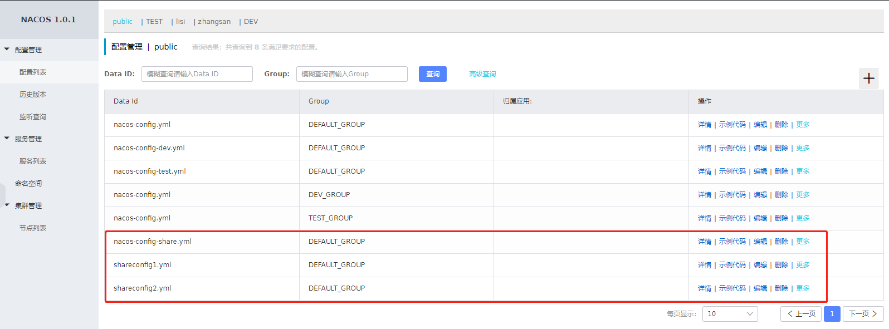
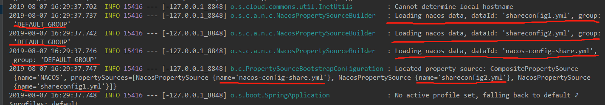
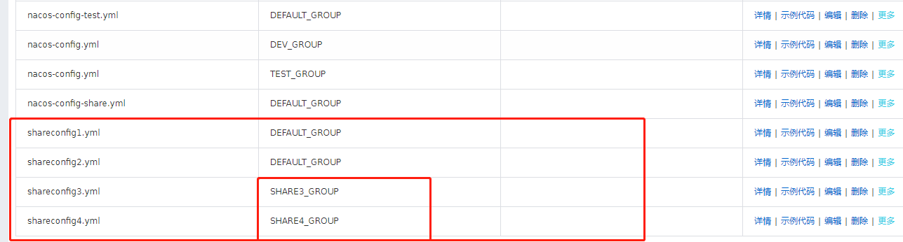

本文参考文章：
SpringCloud Alibaba - Nacos Config 自定义共享配置
前景回顾：
前几章已经基本介绍了springcloud项目结合Nacos的大部分用法，本文介绍一下Nacos作为配置中心时，如何读取共享配置
本文的项目Demo继续沿用之前文章中的聚合工程Nacos,若小伙伴还没有之前的环境，可至源码地址中下载
一个项目中服务数量增加后，配置文件相应增加，多个配置文件中会存在相同的配置，那么我们可以将相同的配置独立出来，作为该项目中各个服务的共享配置文件，每个服务都可以通过Nacos进行共享配置的读取
下面用一个demo演示下，是否可行
一如往常，还是在聚合工程Nacos下创建名为nacos-config-share的子工程，其pom.xml文件依赖与之前的项目都一致，如果您没有之前的项目可参考源码地址
1、修改springboot启动类NacosConfigShareApplication.java
@SpringBootApplication
@EnableDiscoveryClient
@RestController
@RefreshScope
public class NacosConfigShareApplication {
public static void main(String[] args) {
SpringApplication.run(NacosConfigShareApplication.class, args);
}
@Value("${nacos.share}")
private String share;
@Value("${share.config1}")
private String shareConfig1;
@Value("${share.config2}")
private String shareConfig2;
@RequestMapping("/getValue")
public String getValue() {
return share;
}
@RequestMapping("/getShare1")
public String getShare1() {
return shareConfig1;
}
@RequestMapping("/getShare2")
public String getShare2() {
return shareConfig2;
}
}
2、修改该项目的配置文件bootstrap.yml
spring:
application:
name: nacos-config-share
cloud:
nacos:
discovery:
server-addr: 127.0.0.1:8848
config:
server-addr: 127.0.0.1:8848
prefix: ${spring.application.name}
file-extension: yml
shared-dataids: shareconfig1.yml,shareconfig2.yml
refreshable-dataids: shareconfig1.yml,shareconfig2.yml
从配置文件可以看出，通过
shared-dataids属性来指定要读取共享配置文件的DataID,多个文件用,分隔
使用refreshable-dataids指定共享配置文件支持自动刷新
这里我们作为演示，暂不加入Namespace，直接在公共空间中创建及测试
创建配置文件nacos-config-share.yml,详细如下：
nacos-config-share.ymlYAMLserver: port: 9984 nacos: share: nacos-config-share创建共享配置文件1shareconfig1.yml,详细如下：
shareconfig1.ymlYAMLshare: config1: 这里是共享配置文件1创建共享配置文件1shareconfig2.yml,详细如下：
shareconfig2.ymlYAMLshare: config2: 这里是共享配置文件2创建成功后，配置列表如下图：

直接启动项目，如果启动成功。可以看到日志中如下信息：

访问启动类中提供的接口，测试下能否获取到共享配置文件中的值
访问127.0.0.1:9984/getValue,返回：nacos-config-share
访问127.0.0.1:9984/getShare1,返回：这里是共享配置文件1
访问127.0.0.1:9984/getShare2,返回：这里是共享配置文件2再测试下refreshable-dataids配置的自动刷新是否生效
在Nacos控制台中修改共享配置文件shareconfig2.yml的值为：这里是共享配置文件2这里是共享配置文件2
编辑保存后，重新请求 127.0.0.1:9984/getShare2 ，观察返回结果如下：
这里是共享配置文件2这里是共享配置文件2
以上返回结果说明通过在配置文件中指定shared-dataids和refreshable-dataids是可以实现共享配置文件的读取和自动刷新的。
假设现在要读取
shareconfig3.yml和shareconfig4.yml文件但是它的Group为SHARE3_GROUP和SHARE4_GROUP, 即共享配置文件与项目自身配置文件不在同一Group中（上边的例子是全都在DEFAULT_GROUP分组） 那如果继续用上边的方法，就无法读取共享配置文件
这时可以使用另一个配置ext-config，它可以由用户自定义指定需要加载的配置DataID、Group以及是否自动刷新
并且ext-config是一个集合（List），支持多个配置文件的指定。
先创建配置配置文件shareconfig3.yml和shareconfig4.yml，注意他们的Group属性
shareconfig3.ymlSHARE3_GROUPYAMLshare: config3: 这里是共享配置文件3，Group:SHARE3_GROUPshareconfig4.ymlSHARE4_GROUPYAMLshare: config4: 这里是共享配置文件4，Group:SHARE4_GROUP创建成功页面如下：

1、在启动类NacosConfigShareApplication.java中新增如下代码
@Value("${share.config3}")
private String shareConfig3;
@Value("${share.config4}")
private String shareConfig4;
@RequestMapping("/getShare3")
public String getShare3() {
return shareConfig3;
}
@RequestMapping("/getShare4")
public String getShare4() {
return shareConfig4;
}2、修改项目配置文件bootstrap.yml,增加ext-config配置
spring:
application:
name: nacos-config-share
cloud:
nacos:
discovery:
server-addr: 127.0.0.1:8848
config:
server-addr: 127.0.0.1:8848
prefix: ${spring.application.name}
file-extension: yml
shared-dataids: shareconfig1.yml,shareconfig2.yml
refreshable-dataids: shareconfig1.yml,shareconfig2.yml
ext-config:
- data-id: shareconfig3.yml
group: SHARE3_GROUP
refresh: true
- data-id: shareconfig4.yml
group: SHARE4_GROUP
refresh: true项目经过修改后，可以看到
shared-dataids指定进行读取非DEFAULT_GROUP下，通过ext-config配置属性进行自定义读取启动项目，测试所有的配置文件是否可以正常读取
访问127.0.0.1:9984/getValue,返回：nacos-config-share
访问127.0.0.1:9984/getShare1,返回：这里是共享配置文件1
访问127.0.0.1:9984/getShare2,返回：这里是共享配置文件2这里是共享配置文件2
访问127.0.0.1:9984/getShare3,返回：这里是共享配置文件3，Group:SHARE3_GROUP
访问127.0.0.1:9984/getShare4,返回：这里是共享配置文件4，Group:SHARE4_GROUP修改shareconfig4.yml的配置内容为：这里是共享配置文件4，Group:SHARE4_GROUP,支持自动刷新，保存后，再次调用127.0.0.1:9984/getShare4，返回如下：
这里是共享配置文件4，Group:SHARE4_GROUP,支持自动刷新
调用接口后发现，两种共享配置的加载方式都可以正常读取，并且可以一起使用。ext-config的方式实现了用户自定义配置共享配置文件。
上面的demo已经演示Nacos共享配置的两种实现方式，两种方式针对不同的场景，总结如下：
shared-dataids方式：
ext-config方式：
shared-dataids存在的局限性。shared-dataids方案结合使用，用户自定义配置。灵活性强可见两种方式各有长处，所以如果在开发中需要使用共享配置，大家可以是具体情况而定选择自己最合适的方案。
本文源码：https://github.com/larscheng/larscheng-learning-demo/tree/master/Nacos